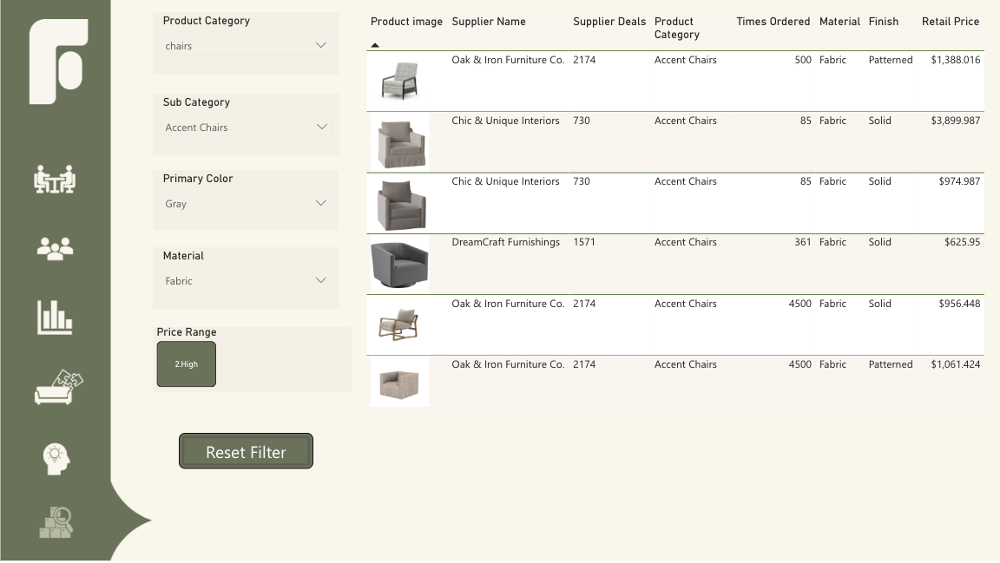
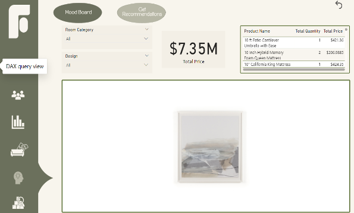

Cars Warehouse Analysis
Introduction
In a highly competitive automotive market, effective pricing strategies and inventory management are critical for success. This project involved analyzing a comprehensive dataset of car listings to provide actionable insights for Autozone, an automotive company. The goal was to build an interactive Power BI dashboard that would help the management team optimize pricing, improve inventory management, and understand market trends. Key areas of focus included analyzing popular car brands and models, price variations across fuel types and gearbox types, and the impact of car age, mileage, and other attributes on pricing and desirability.
Approach and Methodology
Data Cleaning and Preparation:
-
Removed duplicate car listings to ensure data accuracy.
Formatted numeric columns (e.g., Price, Kilometers, Engine Capacity) for consistency.
Handled missing values in critical fields such as price, brand, and model using conditional logic.
Standardized categorical fields (e.g., Gearbox, Fuel Type) to ensure consistency in spelling and case.
Data Analysis and Visualization:
-
Designed and developed interactive visualizations in Power BI to address key business questions, including:
Top Car Brands and Models: Identified the most popular brands and models in the inventory.
Price Variations: Analyzed how prices vary across fuel types (petrol, diesel, hybrid) and gearbox types (automatic, manual).
Car Age and Pricing: Explored the distribution of car models by year and its impact on pricing.
New vs. Used Cars: Compared the average pricing and inventory split between new and used cars.
Mileage and Engine Capacity Trends: Investigated trends in mileage and engine capacity across different car types.
Car Attributes: Analyzed the influence of color, seating capacity, and design type on car desirability and pricing.
Extracted the model year from the dataset for age-based analysis.
Insights and Recommendations:
-
Delivered actionable insights to optimize pricing strategies based on car features and market trends.
Recommended inventory management improvements by identifying popular and slow-moving car types.
Suggested customer targeting strategies based on car attributes and preferences.
Findings
Top Car Brands and Models:
-
Toyota, Ford, and Mitsubishi emerged as the most popular brands, with models like the Hilux, Ranger, and Triton leading in demand.
Price Variations:
-
Hybrid cars commanded higher prices compared to petrol and diesel variants. Automatic gearbox cars were priced higher than manual ones.
Car Age and Pricing:
-
Newer models (2018–2022) had significantly higher prices, while older models (pre-2010) showed a steady decline in value.
New vs. Used Cars:
-
Used cars dominated the inventory (97.86%), with new cars accounting for only 2.14%. However, new cars had a higher average price.

Mileage and Engine Capacity:
-
Higher mileage was associated with lower prices, while cars with larger engine capacities (e.g., SUVs and trucks) were priced higher.
Car Attributes:
-
Neutral colors like grey and white were most common, while seating capacities of 5–7 seats were most desirable.
Deliverables
Interactive Power BI Dashboard
A dynamic dashboard enabling the Autozone management team to explore data, apply filters, and gain insights in real-time.
Insights Report:
A detailed report summarizing key findings and recommendations.
Visualizations:
Charts and graphs illustrating trends in car brands, pricing, age, mileage, and other attributes.
Conclusion
This project successfully delivered a comprehensive analysis of Autozone's automotive inventory, providing actionable insights to optimize pricing strategies, improve inventory management, and better understand market trends. By leveraging Power BI, I created an interactive dashboard that enabled the management team to explore key metrics, such as popular car brands, price variations, car age distribution, and the impact of car attributes on desirability and pricing. The findings highlighted critical trends, including the dominance of used cars in the inventory, the premium pricing of hybrid and automatic vehicles, and the influence of car age and mileage on pricing.
Tools Used
- Power BI
- Power Query Editor
- Data Analysis